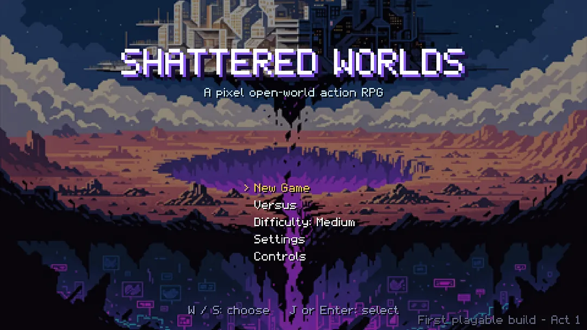
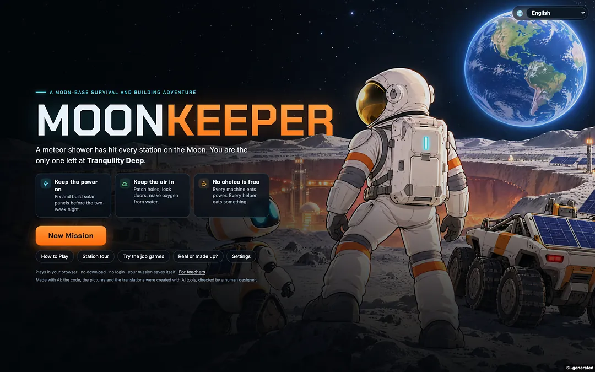
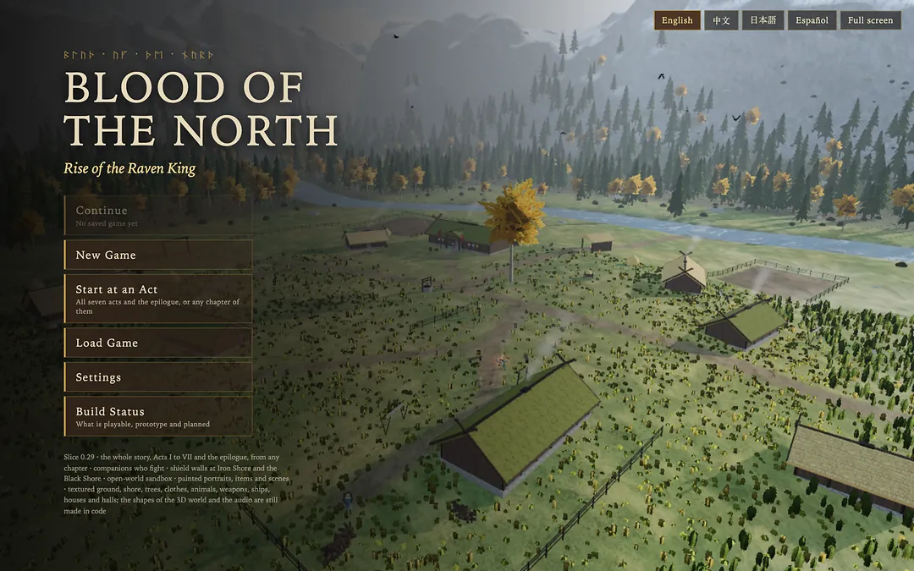
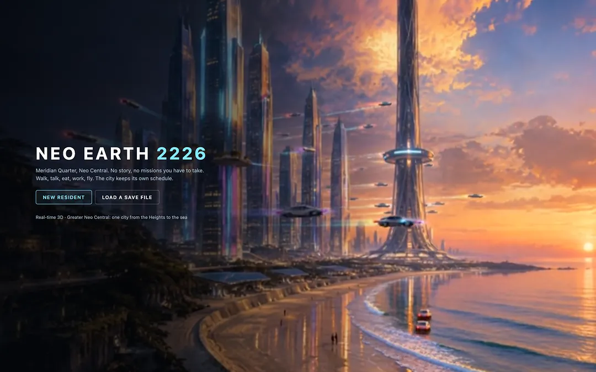

Pixel World
Four games I made. Four lands of one small planet.
Drag the planet to spin it. Scroll to travel.
StartWorld 1 of 4
Shattered Worlds
A side-view 2D pixel open-world action RPG
Two heroes wake with no memories on a post-nuclear, cyberpunk Earth stacked in three layers: Aurelia in the sky, the Surface, and Deepline underground. They fight to get their powers, and their way home, back.
- First playable build: Act 1, both heroes
- Combos, skills, guard, awakening
- Keyboard · gamepad · touch
Play Shattered Worlds (opens in a new tab) Code of Shattered Worlds (opens in a new tab)

Trailers
World 2 of 4
MoonKeeper
A 3D Moon-base survival and building game, for ages 7 to 18
A meteor shower has hit every station on the Moon. You are the only one left at Tranquility Deep, a base inside a lunar lava tube. With REGO the robot, keep the power on and the air in until rescue arrives, or build a Moon town in Unlimited mode. No choice is free: every machine eats power.
- Four modes, Cadet to Unlimited
- Farm, make water, rebuild, explore
- 16 languages · a Mars preview
Play MoonKeeper (opens in a new tab) Code of MoonKeeper (opens in a new tab)

World 3 of 4
Blood of the North
A third-person Viking action RPG · Rise of the Raven King
Eirik's life from childhood to the law-rock at Gulen, following my story The Rise of the Raven King in seven acts and an epilogue. An open world runs from the home valley across the home waters to five great islands: raids, shield walls, a horse, and ships under oar and sail.
- Seven acts and an epilogue
- Open world, by land and sea
- English · 中文 · 日本語 · Español
Play Blood of the North (opens in a new tab) Code of Blood of the North (opens in a new tab)

World 4 of 4
Neo Earth 2226
A futuristic open-world city game in 3D
Neo Central: one continuous city of about 3.2 km by 3.2 km, from the houses of Arbor Heights to the sea. No story you have to follow. Walk, talk, eat, work, ride, race and fly; the city keeps its own schedule.
- 1,423 buildings, a park, a canal, a port
- Jobs, races, an aerocar, an orbital lift
- Desktop: keyboard and mouse, or gamepad
Play Neo Earth 2226 (opens in a new tab) Code of Neo Earth 2226 (opens in a new tab)

Thanks for playing
Every game runs in the browser: nothing to install.
Back to the gallery Plain portfolio To the top
Screenshots are the games' own title screens. The pixel landscapes and the planet on this page are drawn in code.